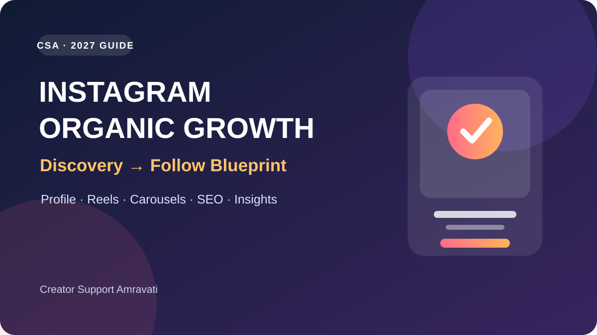
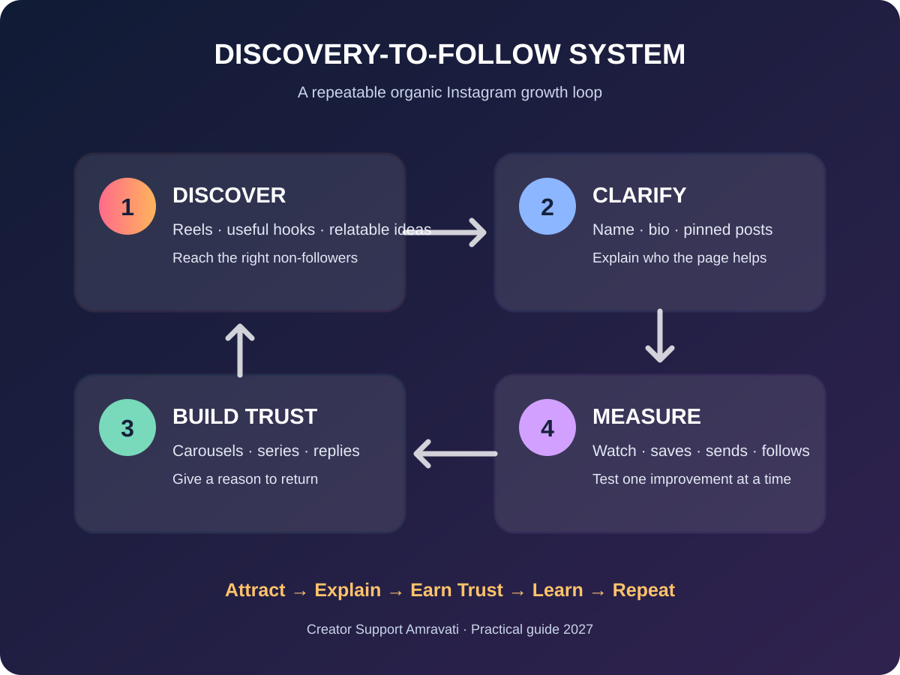

2027 Guide: Instagram Par Organic Followers Kaise Badhayein? Complete Discovery-To-Follow Blueprint
Instagram par views aana aur un views ko genuine followers mein convert karna do alag challenges hain. Sustainable growth ke liye discovery content, useful follow-up posts aur ek clear profile promise ko connect karna zaroori hai. Is guide mein hum ek practical Discovery-to-Follow system banayenge—bina fake followers, guaranteed growth claims ya secret algorithm tricks ke.

- Instagram discovery aur connected reach ka practical overview
- Profile optimization: name, bio, pinned posts aur highlights
- Reach, authority aur connection ke 3 content buckets
- Reels hook, pacing, framing aur audio workflow
- Carousels aur repeatable series ka role
- Instagram SEO, hashtags, collabs aur Insights diagnosis
1. 2027 Mein Instagram Discovery Aur Ranking Ko Kaise Samjhein?
Instagram par Feed, Stories, Explore aur Reels ek hi tarah se rank nahi hote. Har surface ka context alag hai. Feed aur Stories mein aapke connections aur pehle ke interactions relevant ho sakte hain; Explore aur Reels mein logon ko aise accounts ka content bhi mil sakta hai jinhe woh follow nahi karte.
Isliye “algorithm sirf watch time, shares aur saves dekhta hai” jaisa ek-line formula sahi nahi hoga. Ranking signals surface aur content type ke hisaab se badalte hain. Viewer ka interest, content ki information, creator ke saath interaction history, aur log content ko dekhkar kya action lete hain—ye sab context ka hissa ho sakte hain.
- Connected audience: Existing followers ko content dikhane mein relationship aur interaction history matter kar sakti hai.
- Non-follower discovery: Reels aur Explore jaise surfaces par relevant content naye viewers tak pahunch sakta hai.
- Viewer response: Watch behaviour, shares, saves, likes, comments aur feedback ko content ke context mein samjhein—kisi ek metric ko universal ranking guarantee na samjhein.
Practical question: Kya ye post kisi specific viewer ko kuch seekhne, save karne, kisi dost ko bhejne ya creator ka profile explore karne ka genuine reason deti hai?
2. Step 1: Apni Profile Ko Follow-Ready Banayein
Maan lijiye kisi Reel se naya viewer aapki profile par aata hai. Profile ko turant teen sawalon ka jawab dena chahiye: aap kaun hain, kis audience ke liye content banate hain, aur follow karne par aage kya value milegi?
A. Searchable Name Field
Username ke alawa bold Name field mein apna naam aur relevant topic naturally include kar sakte hain. Example: “Rajkumar | Video & Content Growth” ya “Ankush | Maths & Exam Strategy”. Keywords ko unnaturally bharne ya unrelated popular terms use karne se bachein.
B. Three-line value bio
- Who & what: Aap kiski madad karte hain aur kya publish karte hain?
- Focus / credibility: Aapka topic, approach, experience ya useful content promise kya hai?
- Next step: Relevant resource, website, booking ya contact link par clear CTA dein.
Example: “Creators aur small businesses ke liye practical video tips. Reels, editing, content strategy aur digital growth. Free tools aur guides ke liye neeche link dekhein.” Sirf wahi experience ya results likhein jo aap sach mein substantiate kar sakte hain.
C. Three pinned posts as a digital storefront
- Introduction: Aap kaun hain, kis audience ko serve karte hain aur page par kya milega.
- Best educational post: Ek strong tutorial, checklist ya explainer jo aapki content quality dikhaye.
- Proof or resource: Relevant case study, portfolio, process ya free resource. Client results dikhate waqt permission aur context ka dhyan rakhein.
D. Organized Story Highlights
Start Here, Tips / Guides, Tools, Work / Results aur Contact jaise 3–5 clear Highlights se navigation aasaan ho sakta hai. Sirf wahi claims ya testimonials rakhein jinke liye aapke paas permission aur evidence ho.
3. Step 2: The 3-Bucket Content System
Har post ka ek hi goal hona zaroori nahi. Weekly planning mein teen complementary content roles rakhein:
Bucket 1 — Reach content
Goal: Naye relevant viewers tak pahunchna. Formats: Common mistakes, misconceptions, before/after process, relatable problems aur short explainers. Hook strong ho, lekin claim accurate ho.
Bucket 2 — Authority content
Goal: Trust aur practical utility build karna. Formats: Step-by-step tutorials, checklists, tool walkthroughs, frameworks aur educational carousels. Aise posts banayein jinhe audience baad mein refer kar sake.
Bucket 3 — Connection content
Goal: Audience ko creator ke process aur point of view se jodna. Formats: Behind-the-scenes, lessons learned, Q&A, project breakdowns aur honest workflow updates. Personal sharing comfortable aur relevant boundaries ke andar rakhein.
Ek simple planning rule: har week teenon buckets ko jagah dein, lekin exact ratio apne niche, capacity aur audience response ke hisaab se set karein.
4. Step 3: High-Retention Reels Architecture
Reels ka opening moment viewer ko bataye ki video uske liye relevant kyun hai. Har 3 second ya 5 second mein edit karna mandatory rule nahi hai—pacing topic aur explanation ke hisaab se honi chahiye.
Hook, framing aur editing checklist
- Start with the value: “Aaj hum baat karenge…” jaise long generic intro ki jagah problem, outcome, demo ya question se shuru karein.
- Visual + verbal hook: Opening line aur on-screen text ek hi idea ko clear karein. Text short aur readable rakhein.
- Vertical safe framing: 9:16 frame mein important face aur text ko interface overlays se door rakhein. Publish se pehle actual phone preview check karein.
- Purposeful cuts: Pauses, repetition aur irrelevant detours trim karein. B-roll, zoom ya text highlight tabhi add karein jab explanation clearer ho.
- Clear audio: Record se pehle test clip sunen. Background noise, echo aur clipping reduce karein.
- Readable captions: High contrast, sensible line breaks aur screen par enough display time dein. Captions ko final preview mein proofread karein.
“60% viewers bina sound ke dekhte hain” jaise unsupported universal statistic ko planning ka base na banayein. Captions accessibility aur comprehension ke liye useful hain, chahe viewer audio on rakhe ya off.
5. Step 4: Carousels Aur Repeatable Series Se Follow Ka Reason Dein
Reels discovery la sakti hain; carousels kisi topic ko save-worthy detail mein samjha sakte hain. Repeatable series audience ko agle useful instalment ka clear expectation deti hai.
Educational carousel structure
- Slide 1: Specific promise ya problem—jaise “Instagram Bio Ke 3 Essential Parts”.
- Slides 2–5: One idea per slide, short examples aur readable design.
- Final slide: Summary aur relevant next step—save, share ya related guide explore karne ka genuine reason.
Repeatable series ideas
Examples: “Weekly Editing Breakdown”, “Creator Packaging Tip”, “Small Business Reel Ideas” ya “One-Minute Instagram Audit”. Series ka naam aur format consistent rakhein, lekin har instalment independently useful bhi ho.
6. Step 5: Instagram SEO, Captions, Hashtags Aur Collaborations
Keyword-rich captions
Caption ki opening lines mein topic ko natural language mein describe karein. Agar post “podcast microphone setup” par hai, toh relevant phrase aur audience context likhein. Keyword stuffing, unrelated tags aur repetitive captions avoid karein.
Hashtags: relevance over volume
3–5 relevant hashtags ek simple starting choice ho sakti hai, lekin ise Instagram ka fixed rule ya reach formula na samjhein. Hashtags post ka context add kar sakte hain; topic clarity, caption, on-screen wording aur audience response bhi important hain.
Strategic collaborations
Complementary creators, educators, local businesses ya brands ke saath Collab post tab useful hai jab dono audiences ke liye content relevant ho. Publish se pehle role, content ownership, approvals aur paid partnership disclosure clear karein. Collaboration se follower growth guaranteed nahi hoti.
7. Instagram Insights Diagnosis: Kaun Sa Metric Kya Batata Hai?
Professional Dashboard aur post-level Insights mein available metrics ko content format aur account context ke saath compare karein. Har account ko same metric set ya same benchmark dikhna zaroori nahi.
| Metric / signal | Kya samajhne mein madad karta hai | Agar weak ho toh kya test karein |
|---|---|---|
| Average watch time / retention | Opening aur video flow viewer ko kitna engage kar rahe hain | Hook ko specific banayein, intro shorten karein, explanation ko clearer sequence mein rakhein |
| Shares / sends | Content kitna relevant ya share-worthy laga | Relatable use cases, helpful examples aur audience ke real questions cover karein |
| Saves | Post future reference ke liye useful ho sakti hai ya nahi | Checklist, steps, templates aur concise summaries test karein |
| Profile visits | Content dekhkar kitne log profile explore kar rahe hain | Topic aur CTA ko clear karein; profile promise ko post ke niche se match karein |
| Follows / profile visits | Profile visit karne walon mein se kitne follow kar rahe hain | Name, bio, pinned posts, highlights aur recent grid improve karein |
Ek post ke numbers ko final verdict na banayein. Similar topics aur formats ko compare karein, phir ek waqt mein ek meaningful change test karein.

8. Five Mistakes That Can Weaken Sustainable Growth
- Fake followers ya engagement pods: Bought or artificial engagement aapke real audience understanding ko distort kar sakta hai, platform rules ka risk create kar sakta hai aur meaningful community nahi banata.
- Follow-unfollow tactics: Ye low-intent interaction create karte hain aur spam-like behaviour ho sakta hai. Real value aur relevant conversations par focus karein.
- Frequent niche switching without a clear bridge: Har post alag audience ko target kare toh profile ka promise unclear ho sakta hai. Adjacent topics ko ek coherent theme mein connect karein.
- Reused content without transformation or permission: Doosre creator ka content copy karna, watermark hide karna ya rights ignore karna avoid karein. Original footage, licensed assets aur meaningful commentary use karein. Watermark ke baare mein blanket algorithm claims karne ke bajay platform recommendations aur content originality guidance check karein.
- Audience ko ignore karna: Comments aur DMs ka thoughtful reply trust build kar sakta hai. Har message ka reply possible na ho toh FAQs aur clear response windows set karein.
9. A Practical 30-Day Discovery-to-Follow Improvement Plan
- Days 1–5 — Profile clarity: Name field, bio, pinned posts aur Highlights audit karein. Ek sentence mein audience promise likhein.
- Days 6–12 — Content mapping: Audience ke 10 questions collect karein aur unhe Reach, Authority aur Connection buckets mein sort karein.
- Days 13–20 — Publish and learn: Apni capacity ke mutabik Reels aur carousel formats test karein. Har post ka ek clear purpose rakhein.
- Days 21–26 — Discovery improvements: Captions, relevant keywords, collaborations aur repeatable series ko test karein.
- Days 27–30 — Review: Watch behaviour, shares, saves, profile visits aur follows ko compare karein. Next month ke liye do successful patterns aur ek improvement area note karein.
Ye 30-day learning plan hai, 1,000 followers ya kisi fixed result ka promise nahi. Growth niche, audience demand, content quality, distribution aur time ke saath vary karti hai.
Frequently Asked Questions
1. Instagram par 0 se 1,000 organic followers banane mein kitna samay lagta hai?
Iska koi guaranteed timeline nahi hai. Niche clarity, audience demand, content usefulness, consistency aur profile conversion sab matter karte hain. 30–90 din ko promise ya standard result na samjhein.
2. Hafte mein kitni Reels aur posts dalna best hai?
Koi universal frequency nahi hai. Aisa schedule chunein jise aap quality aur audience value banaye rakhte hue consistently follow kar sakein. Insights ke basis par cadence adjust karein.
3. Kya naye account par hashtags ab bhi kaam karte hain?
Relevant hashtags content context samajhne mein madad kar sakte hain, lekin hashtags viral reach ki guarantee nahi dete. Caption, on-screen text, topic clarity aur viewer response par bhi dhyan dein.
4. Reels par views aa rahe hain par followers nahi badh rahe—kya karein?
Profile visits aur follows ka ratio dekhein. Name field, bio, pinned posts, highlights aur recent grid ko ek clear audience promise dena chahiye. Reel ka topic bhi profile ke niche se match hona chahiye.
5. Kya Instagram growth ke liye mehenga camera aur studio zaroori hai?
Nahi. Useful content, clear audio, adequate light, stable framing aur readable captions se smartphone par bhi shuruaat ki ja sakti hai. Gear ko tab upgrade karein jab current setup real limitation ban raha ho.
Useful Tools & Resources
- Free YouTube & Instagram Packaging Kit — hooks, captions aur content packaging plan karne ke liye.
- Reels Editing, Carousels & Studio Production — CSA ki creative production aur social content services dekhein.
- Social Media & Content Growth Consultation — apne brand ya creator workflow ke liye contact karein.
Suggested & Related Articles
- How to Grow on YouTube in 2027: Complete Growth Blueprint
- Local Businesses Ke Liye Instagram Reels Se Customers Kaise Layein?
- Ek Video Se 10 Content Pieces Kaise Banayein?
- Beginner Video Editing Workflow
Helpful Official Guidelines & References
- Instagram: Shedding More Light on How Instagram Works
- Instagram Creators: Official creator resources
- Instagram: Best Practices education hub for creators
- Meta: Community Standards
About the Author
Rajkumar Chavhan is a digital marketing specialist with 8+ years of experience and the founder of Creator Support Amravati (CSA). He supports creators, educators and businesses with Instagram and YouTube content strategy, Reels/video editing, graphic design, SEO, web development and studio production.
- Website & Free Creator Tools: creatorsupportamravati.in
- Studio & Office: Vyanktesh Complex, Shop No. F-101, Mahendra Colony, Naredi Nagar Road, Amravati, Maharashtra 444604
Editorial Disclosure: Yeh guide educational aur informational purpose ke liye hai. Instagram ke features, recommendations aur policies badal sakte hain; current details ke liye official Meta/Instagram resources check karein. Kisi follower count, reach ya business result ki guarantee nahi di jaati. Reels editing, design ya studio support ke liye Creator Support Amravati se sampark karein.